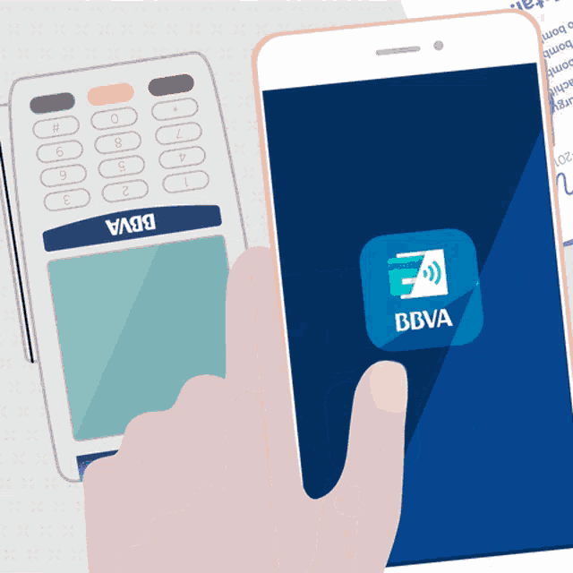

 ?Por que es tan buena la APP?
El objetivo de Blue es brindar una respuesta en tiempo real a las principales consultas del cliente, utilizando un lenguaje sencillo y visual para clientes no familiarizados con la 'app'. El asistente est? disponible en la nueva versi?n de la 'app' de BBVA accediendo al ?rea privada del cliente. Blue est? ubicado en la parte derecha del interfaz del cliente, solo est? disponible en castellano.
Gracias a la inteligencia artificial y al aprendizaje continuo del asistente, el cliente puede interactuar con el asistente virtual para obtener respuesta sobre decenas de tem?ticas. Desde d?nde est? el cajero m?s cercano, a solicitar informaci?n sobre productos financieros, saber cu?l es el saldo en las cuentas, o hasta cu?nto gast? en viajar el a?o pasado, as? como saber si has cobrado este mes o incluso puedes solicitar hablar con un agente, que se pondr? en contacto contigo de inmediato.
?Gracias a Blue, nace una nueva forma de comunicarse e interactuar entre el cliente y BBVA. Si el usuario no conoce una herramienta o no sabe c?mo hacer alguna operaci?n, solo debe de preguntar a Blue y en un instante tiene la soluci?n. La experiencia y calidad del usuario van a aumentar con este desarrollo?, ha subrayado Eliseo Catal?n, responsable de Producto de Blue de BBVA en Espa?a.